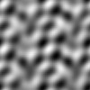
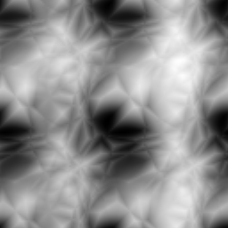
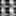
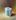

Hearing an Image One Pixel at a Time
 Tonight I became curious as to what an image would sound like when "played" one pixel at a time.
tl;dr: The play-pixels program.
Now, if we are wanting to hear a picture in color (like a 24bit image), we could play a triad for each of the red, green, and blue values seen for a pixel. This might sound horrid - but possibly fascinating, with chromatic tone clusters. However, I am going to render gray-scale fractal images and play each pixel one quarter note at a time.
With the very cool module, Math::Fractal::Noisemaker, you can generate a number of different types of fractal images. Here is a 256x256 "worley" type:

Playing each of 256 squared (=65,536) notes would take a very long time (~11 hours at 100 BPM). Also, the score would not be very dynamic. That is, smooth gradients and large areas of the same color might make a possibly boring soundtrack. So I will play between 8x8 and 100x100 length scores. These do not make for very dramatic images, but they are perfect for rendering to audio. For instance, here is the "worley" type as a 16x16 image:

You can sort-of see a resemblance, but the above images are not the same image that has been scaled. That is, each run of the program generates a fresh fractal image.
Onward! First up is the standard Perl preamble and the modules that I will be using - Math::Fractal::Noisemaker, Imager, Math::Utils, and MIDI::Util:
#!/usr/bin/env perl
use strict;
use warnings;
# This requires https://metacpan.org/pod/Math::Fractal::Noisemaker
use Imager;
use Math::Utils ':utility';
use MIDI::Util;
Next up are the program variables to be used:
my $type = shift || 'worley'; # Noisemaker type
my $size = shift || 8; # Side width of Noisemaker image
my $bpm = shift || 100; # Beats per minute
my $score = MIDI::Util::setup_score(bpm => $bpm, patch => 5);
my $file = 'make-noise.png';
The meat of the code starts off by making a gray-scale fractal image with an external perl program called "make-noise" that you get when you install Math::Fractal::Noisemaker:
system('make-noise', '-out', $file, '-type', $type, '-len', $size, '-format', 'png') == 0
or die "system failed: $?";
This produces an image file, as above.
The next step is to open the image, read it into Imager, and then delete it:
# Open the image
my $img = Imager->new;
$img->read(file => $file)
or die "Can't read $file: ", $img->errstr;
# Remove the image file
unlink $file;
Now the image is processed by looping over each pixel and inspecting its color. Each is converted to a MIDI note number and written to the growing score. After the loop, the score is written to disk as "play-pixels.mid":
my $s_field = length $size;
my $i_field = length($size * $size);
my $i = 0;
# Add a note to the score for each pixel color
for my $y (0 .. $size - 1) {
for my $x (0 .. $size - 1) {
$i++;
my $color = $img->getpixel(x => $x, y => $y);
my ($red) = $color->rgba;
# Scale from grays range to MIDI note range
my $n = sprintf '%.0f', uniform_scaling([0, 255], [60, 83], $red);
printf "%*d. [%*d,%*d] %3d -> %d\n",
$i_field, $i,
$s_field, $x, $s_field, $y,
$red, $n;
$score->n('qn', $n);
}
}
$score->write_score("$0.mid");
So what is this "uniform_scaling()" function all about? When a color (a shade of gray) is found, it is converted to the range of MIDI note numbers with the Math::Utils function.
So what does an example of one of these 8x8 fractals sound like? I imported the generated MIDI file into my DAW, and this is it (with a bit of drums added):
Extreme tedium! Not a dance hit! At a higher BPM this might sound like a zany roller-coaster ride... And yes indeed it does.
I uploaded the 33.3 minute audio of a 100x100 simplex fractal at 300 BPM to YouTube. (It uses a "reversed electric piano" patch, which gives it that spacey background delay.) Use a program like Timidity++ or VLC to hear it. And here is an example of a 100x100 simplex fractal:
Update: Here is what a 16x20 colored image sounds like at 200BPM. This was made with a variation of the above program, but called play-color-pixels:
